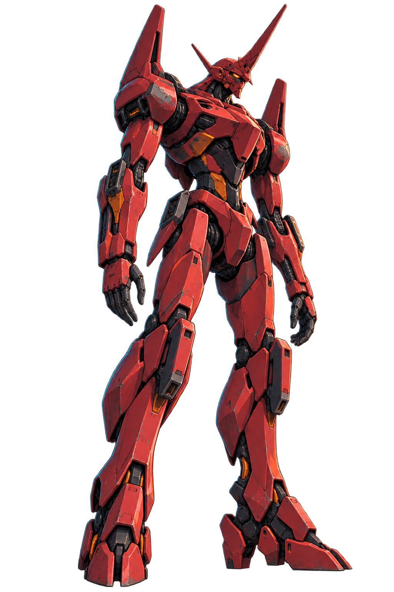
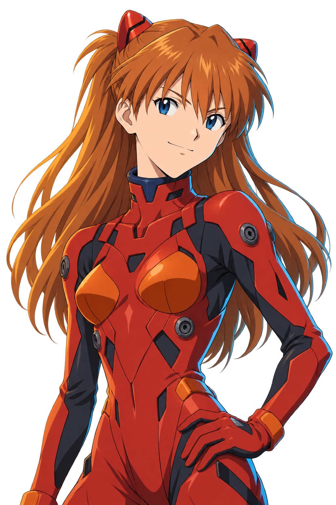

OPERATIONS / 作战大厅
访客模式 · 登录后保存联网成长欢迎归队，驾驶员。
双机协同作战系统 STANDBY


PROJECT: FIRST LIGHT同步启动。
同步启动。
向黎明出击。
两名驾驶员，两条成长路线。
共用一片战场，各自选择战斗方式。
机库状态：就绪 保留原作战斗精灵 · 新增机甲世界观视觉
SORTIE BRIEFING / 战前准备
先同步，再出击。
01 / MISSION
选择作战任务
由房主选择任务；变更后双方重新确认准备。
02 / PILOT & LOADOUT
出战机体
装扮系统 · 后续扩展
03 / SYNCHRONIZATION
小队同步
一起作战的理由
接力命中触发协同伤害
近身救援恢复倒地队友
支援技能可保护另一台机体
双方准备后自动出击
NEURAL LINK / 技能树
选择你的同步方式。
起点 → 进阶 → 终极
熟练度解锁后续层级；前置节点必须点亮。三个终极流派只能选择一个。试配仅供训练，不覆盖出战存档。
SUPPLY / 配件补给
为机体多准备一点。
SUPPLY LINK / 免费补给招募
无充值 · 基础驾驶员始终可选等待下一次共鸣。
DAWN SUPPLY CHANNEL
机体配件补给
每次联网胜利获得 1 张补给券。
首次完成新手教学获得 3 张。
补给规则
普通配件 75% · 稀有配件 25%
连续 9 次未获得稀有，第 10 次必得稀有。
重复普通配件转为 40 金币，重复稀有转为 80 金币。同品质内等概率。
当前池为六种已实现的配件。角色、外观暂不进入招募池；两位基础角色始终可用。
最近的补给
SIMULATION / 个人练习
在出击之前，找到手感。
选择训练机体
木桩无限重生、训练无敌、可重置统计；不获得熟练度和金币。
TRAINING PROGRAM
从第一次移动，到双机共鸣。
- 机体移动与镜头
- 瞄准与主武器射击
- 加速与位移
- 角色核心技能
- 力场 / 导弹爆发
- 冷却管理与战斗统计
方向键 移动 · 空格射击 · E 治疗 · Q 加速 · W 核心技能 · R 爆发技能
协同命中 · 近身救援 · 共享支援方向键 / 空格 / Q W E R / F / C / 1 2 3